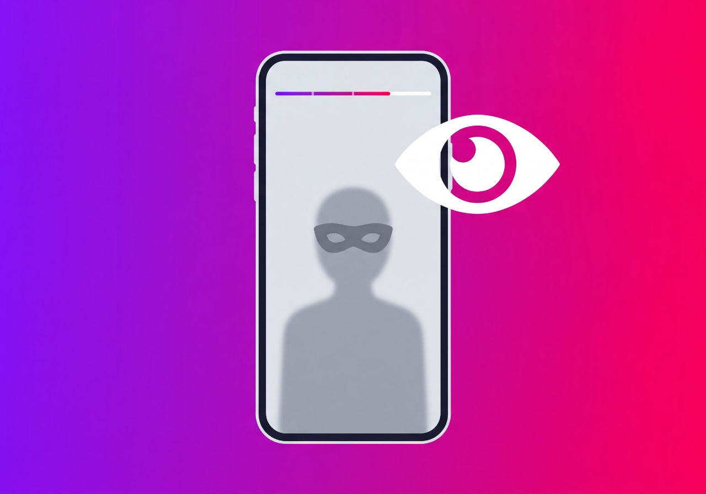
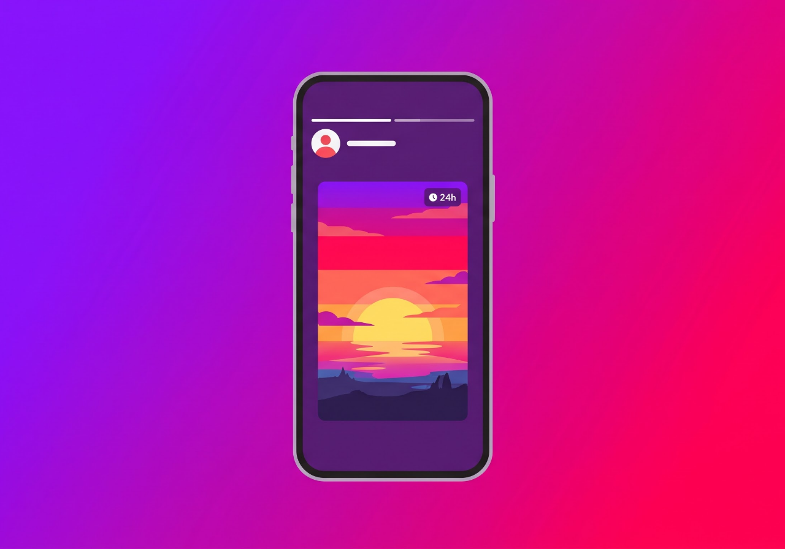

SpeedDL Instagram Stories Viewer is a complimentary tool that enables anonymous viewing of Instagram stories from public profiles without the need for Instagram user authentication. The platform offers a range of free features, allowing you to discreetly view stories without any extra steps, other than entering the user's Instagram handle.
See below the three easy steps to use this Instagram Story Viewer. It saves time and energy.
Open a post on where there is your favorite Instagram profile and copy the link.
Paste the link to the input line on the Instagram Story Viewer page. Remember to have the SpeedDL web page already opened.
Click the Download button to save the stories to your device.
An Instagram viewer is a third-party website or app that allows you to view Instagram posts, stories, and profiles anonymously without having an Instagram account or logging into one.
Currently, Instagram users do not have the option to download or save stories, highlights, or reels from Instagram directly. However, thanks to the Instagram Stories viewer, users now have this option. Additionally, the SpeedDL Instagram Highlights viewer allows you to anonymously view public user stories regardless of the device you are using.

When you watch a story while logged in, Instagram adds your username to that story's viewers list. An anonymous viewer cuts that link. Your account never makes the request; SpeedDL's server fetches the public story for you and streams it back to your browser. The owner sees an ordinary request for something that's already public, with nothing pointing at your profile.
This FAQ provides information on frequent questions or concerns about the SpeedDL Instagram viewer.
No. SpeedDL loads public stories without logging into your account, so the owner is not notified and you do not appear in their viewers list.
Yes, it is completely free with no limits and no registration.
No login is ever required. SpeedDL never asks for your Instagram password.
No. SpeedDL only works with public Instagram accounts, in line with Instagram's rules.
No. The request goes through SpeedDL, not from you directly, so the account owner cannot see your IP.
A burner account still appears in the viewers list and can be blocked. SpeedDL does not interact with the account at all, so you stay fully anonymous.
Instagram does not notify users of story screenshots. With SpeedDL you can also download the story instead of screenshotting.
Yes, you can save public stories, highlights and posts to your device in original quality.
Any device with a modern browser: iPhone, Android, Windows, and Mac.
No. SpeedDL does not keep logs of the profiles you view or any search history.
Viewing public content is generally legal. Use it responsibly and respect others' privacy and copyright.
SpeedDL is supported by light advertising, which lets us keep the anonymous viewer free for everyone.
Watch Stories from public accounts without appearing in the viewers list. Free, fast, and no login.
Try for free